- Milk
- Mozzarella Cheese 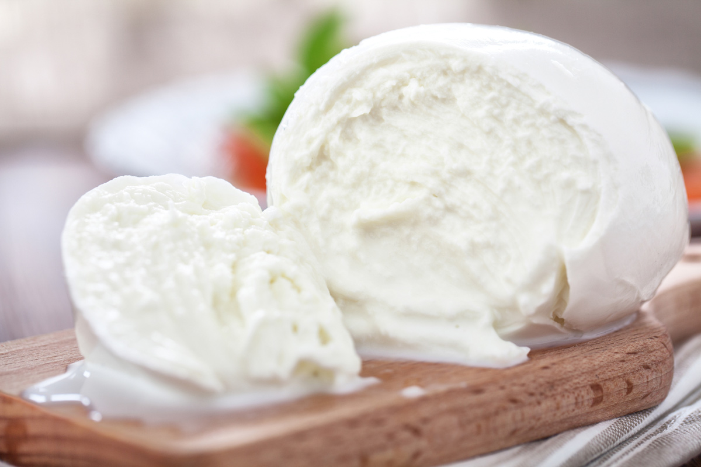
- Yogurt 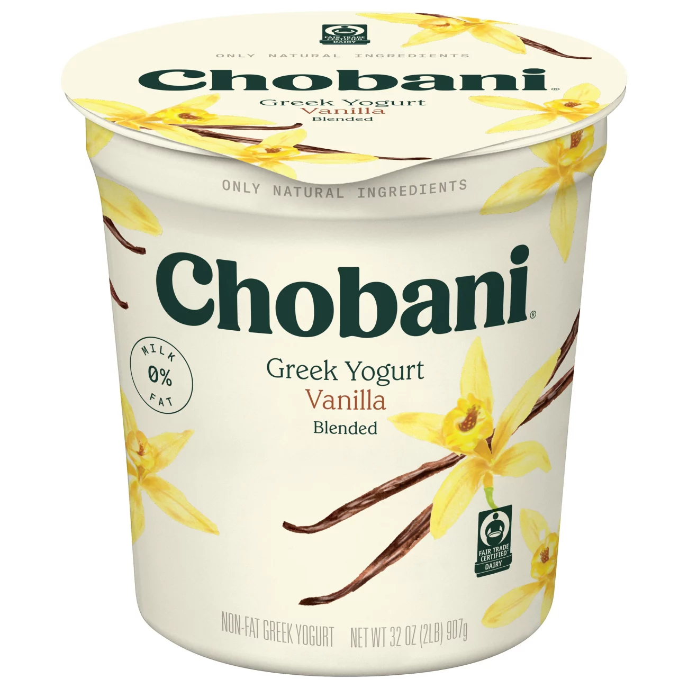
- Cream Cheese
- Sour cream
- Butter 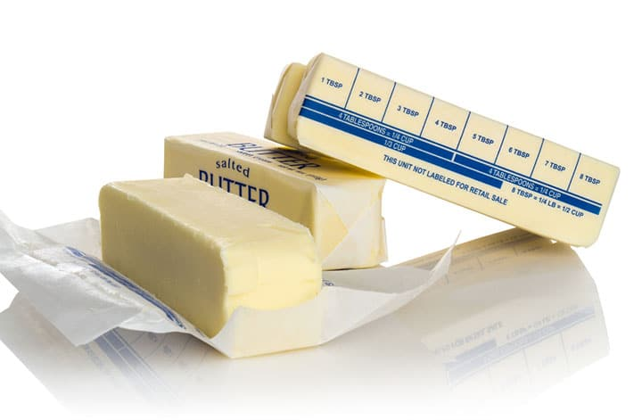


- Bacon 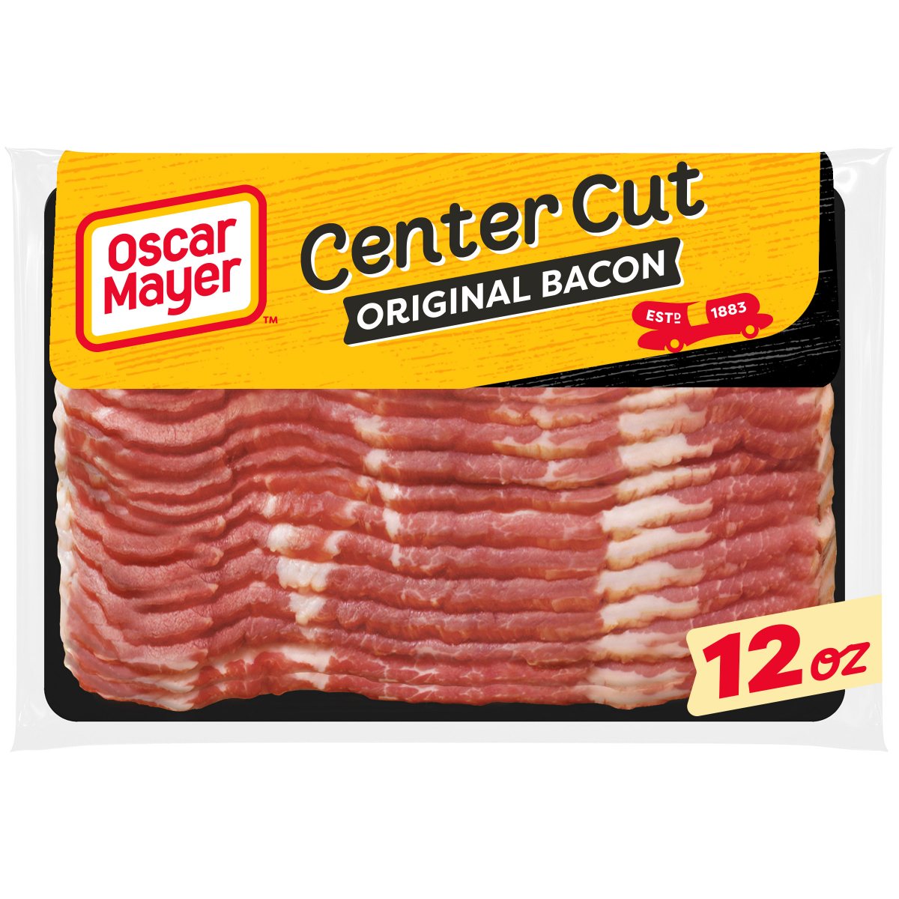
- Ground Beef
- Ground Turkey
- Chicken Breast 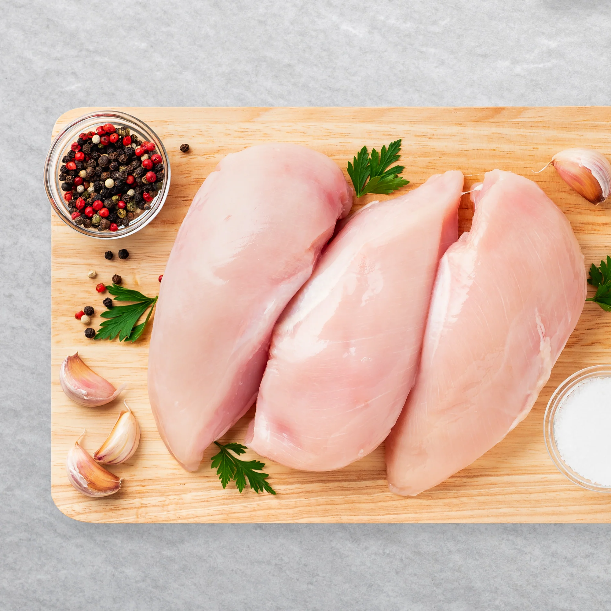
- Ribs


- Carrots 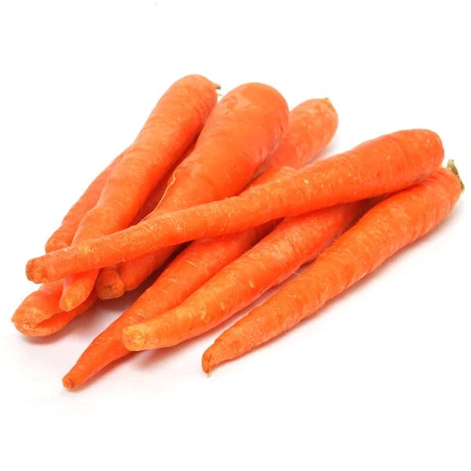
- Potatoes
- Green Plantains 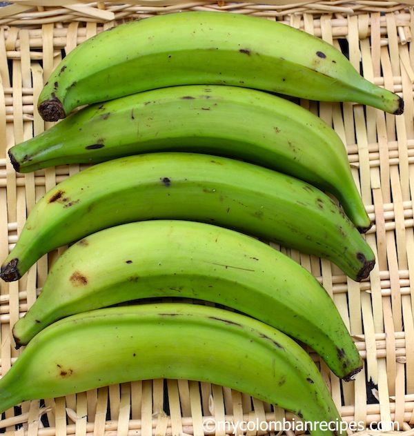
- Lettuce 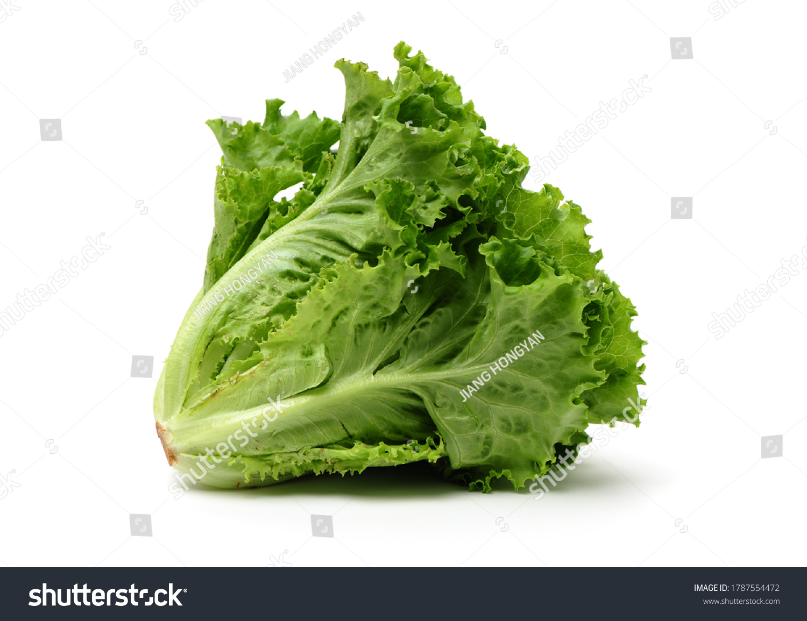
- Tomates 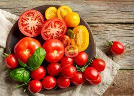

- Strawberries 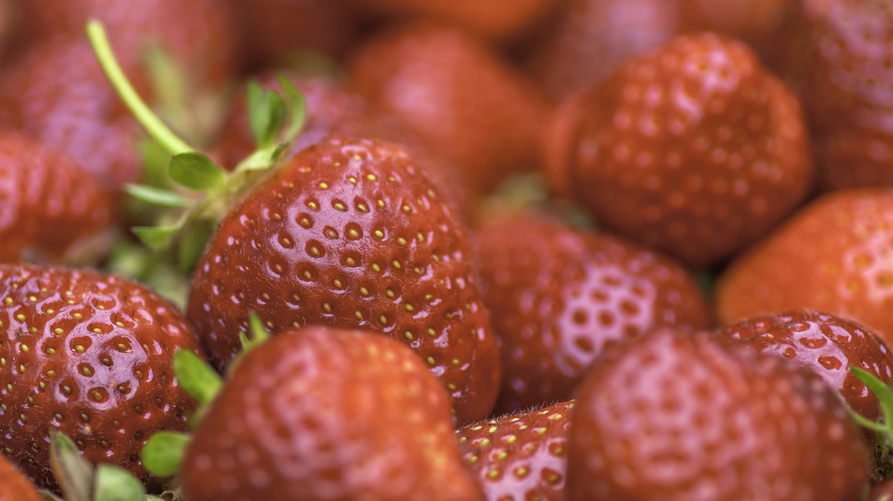
- Apples 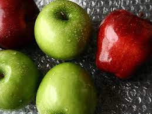
- Oranges
- Bananas 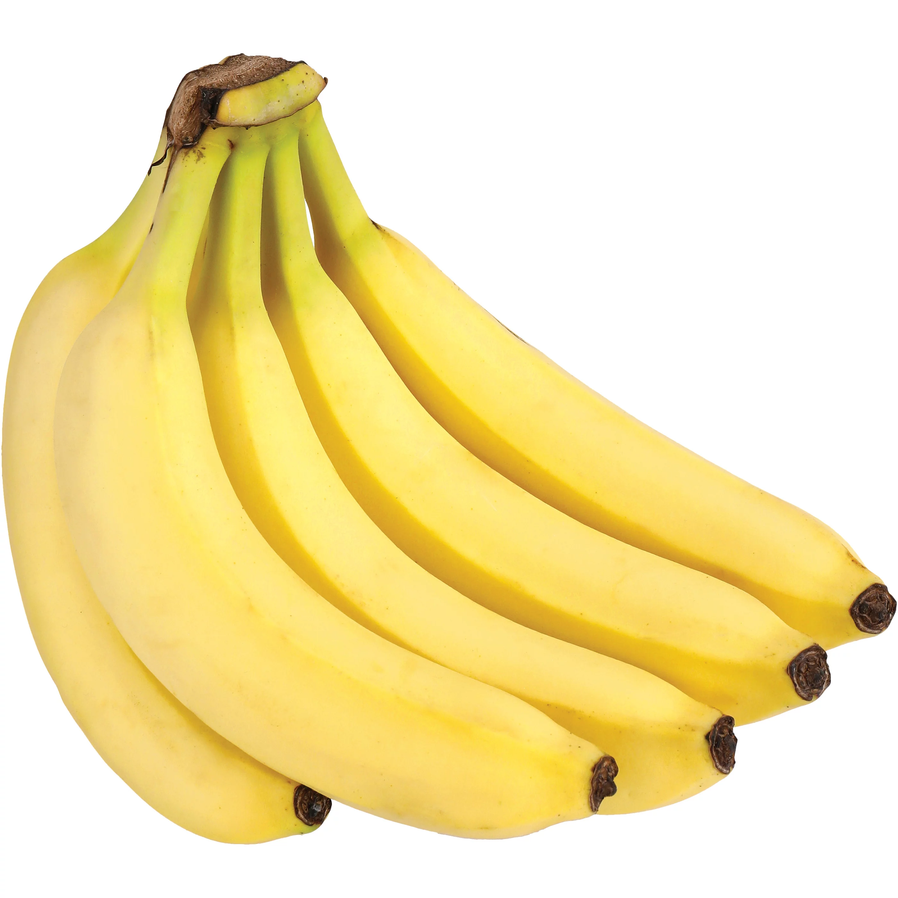
- Grapes 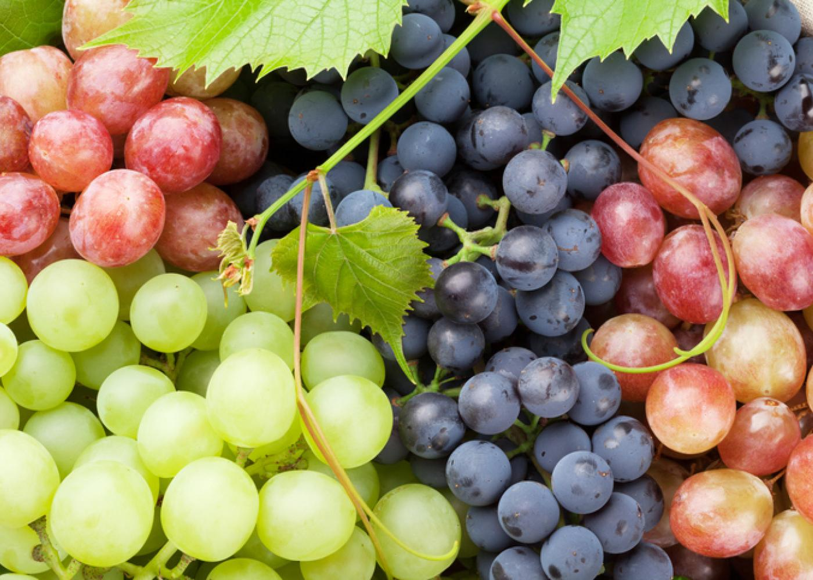

- Orange Juice
- Apple Juice 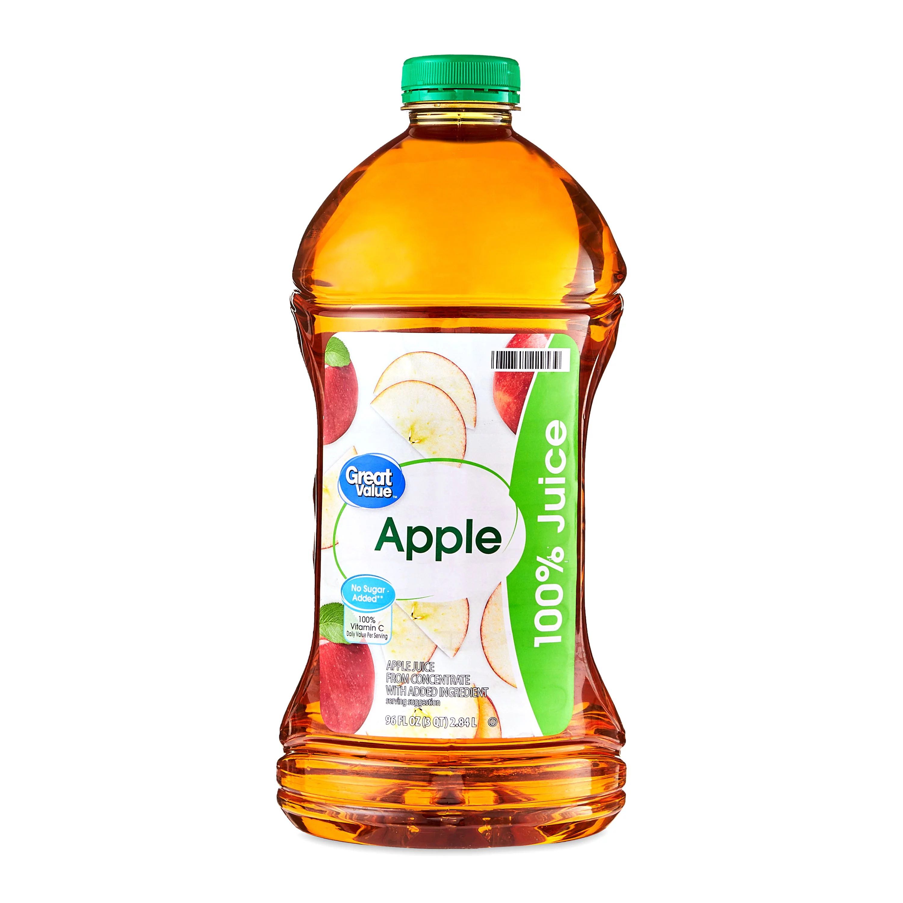
- Water
- Pepsi 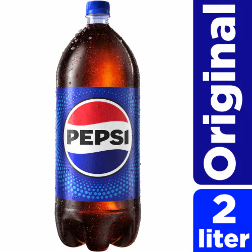
- Country Club Merengue 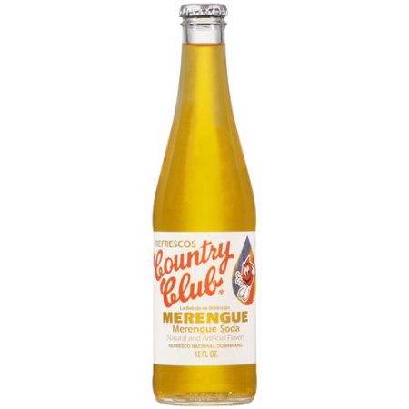